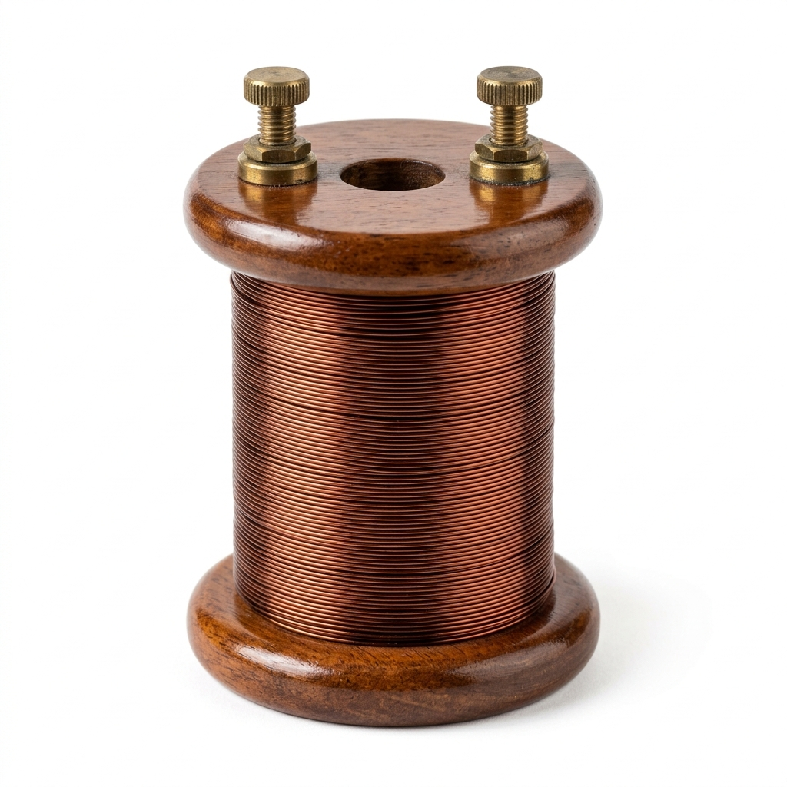
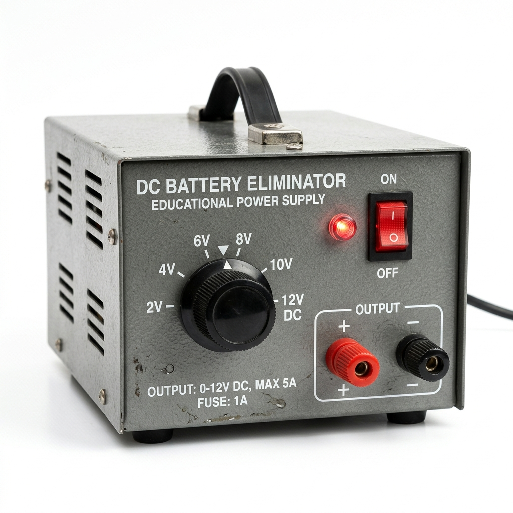

1. Principle of the Wheatstone Bridge
The Wheatstone Bridge is an electrical network of four resistances P, Q, R, and S forming a closed diamond loop. A battery is connected across junctions A and C, and a sensitive center-zero galvanometer G is connected across junctions B and D.
2. Derivation Using Kirchhoff's Rules
- Kirchhoff's Junction Rule (KCL) at B & D: When balanced, no current flows through the galvanometer: Ig = 0. Therefore, IP = IQ = I₁ and IR = IS = I₂.
- Kirchhoff's Loop Rule (KVL) for Loop ABDA:
−I₁·P + I₂·R = 0 &implies; I₁·P = I₂·R ... (Eq. 1)
- Kirchhoff's Loop Rule (KVL) for Loop BCDB:
−I₁·Q + I₂·S = 0 &implies; I₁·Q = I₂·S ... (Eq. 2)
- Dividing Eq. 1 by Eq. 2 yields the celebrated Wheatstone balance condition:
P / Q = R / S
3. The Meter Bridge (Slide-Wire Bridge)
A Meter Bridge consists of a 1-meter (100 cm) uniform manganin wire stretched along a meter scale between thick brass strips. If l is the balancing length from end A:
S = R · (100 − l) / l
4. Why Bridge Sensitivity is Highest Near Center (50 cm)
The fractional measurement error due to a reading uncertainty Δl is given by:
ΔS / S = 100·Δl / [l·(100 − l)].
The product l·(100 − l) is maximized at l = 50 cm, making the fractional error minimal and sensitivity maximal.
🏷️ 5. Apparatus Identification & Memorization Guide
Complete visual guide to laboratory instruments, schematic symbols, and key memory tips for CBSE/STEM physics practicals.
Standard Resistance Box
Left Gap • Known Standard Arm
A teakwood box with brass blocks and plugs. Unplugging a key inserts a calibrated known resistance R into the left gap to balance the bridge.
💡 Memorize: Coils are wound double (non-inductive) to eliminate unwanted self-induction effects.

Symbol: X (S)
Unknown Resistance Coil
Right Gap • Specimen Arm to Measure
The test specimen wire wound on a bobbin whose resistance X is determined by X = R·(100−l)/l.
💡 Memorize: Specific resistance ρ = (X·π·d²)/(4·L) using screw gauge for diameter d and meter rod for length L.
Center-Zero Galvanometer
Detector Arm BD • Null Indicator
High-sensitivity detector with zero at center. Deflects left or right based on direction of current I_g; registers 0 at balance.
💡 Memorize: Null-deflection method means accuracy does not depend on galvanometer internal resistance!
Sliding Jockey (Knife-Edge)
Movable Contact • Junction B / D
A metal rod with a sharp brass knife-edge blade and insulated handle tapped along the wire to locate balancing length l.
💡 Memorize: Never scrape the jockey along the wire; scraping causes non-uniform cross-sectional area A.
Manganin / Constantan Wire
Stretched 100 cm • Ratio Arms P & Q
A 1-meter uniform wire divided by the jockey into segment l (Arm P) and (100−l) (Arm Q), giving P/Q = l/(100−l).
💡 Memorize: Manganin alloy has high resistivity and virtually zero temperature coefficient (α ≈ 0).

Source: E, K₁, K₂
Battery Eliminator & Plug Keys
External Supply Loop • Safety Switches
Supplies steady low voltage DC (2.0 V). Plug key K₁ controls battery loop; key K₂ protects the sensitive galvanometer.
💡 Memorize: Always close battery key K₁ first and galvanometer key K₂ second to prevent inductive kick.